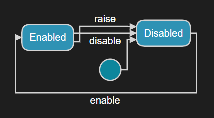

Integration with External Code
In most cases a realtime application contains at least some code that is not generated by Code RealTime. The application can use libraries, both 3rd party libraries and libraries you have created yourself. It can also contain other C++ code which is built together with generated code, either from within Code RealTime or from another IDE or build system. In this chapter we'll look at some techniques and best practises for integrating the code generated by Code RealTime with other code, which we here refer to as external code.
External Port
External code can send events to a capsule in a thread-safe way by means of an external port defined on the capsule. Such a port is typed by the predefined External protocol.
External ports can for example be useful in scenarios when external code has to wait for some event to occur or some data to become available, and then notify a capsule about it. Such external code has to run in its own thread (an external thread), to avoid blocking the application while it's waiting. In some cases it's enough to just notify the capsule about what has happened, while in other cases it's necessary to also transfer some data from the external code to the capsule. Here are examples for three typical scenarios:
- Notify a capsule when a button is pushed. In this case it's not necessary to transfer any data to the capsule, but it's enough to raise an event on the external port.
- Periodically read the temperature from a sensor, and notify a capsule when the temperature has changed. In this case the external code can use a periodic timer to read the temperature sensor. When a change is detected the capsule can be notified about the new temperature by raising an event on the external port, and use a
floatas event data. - Wait for string data to become available on a socket, and when it does pass the read strings to a capsule. If strings arrive on the socket at a high pace it may be inefficient to pass them one by one to the capsule. Instead the external code can store received strings in a shared data area from where the capsule can fetch it when it's ready to do so.
All these types of scenarios are supported by means of external ports.
Example
You can find a sample application that uses an external port here.
General Usage
The capsule that owns an external port has full control over when it's ready to accept an event on the external port. This is important to prevent an external thread from "starving" the thread that runs the capsule. The following rules apply for how an external port must be used:
- An external port is initially disabled. In this state the external code cannot raise an event on the port. It can try, but nothing will happen.
- The external port can only be enabled by the capsule itself, by calling
enable()on the port. It's important that this call happens from the same thread that runs the capsule. If the port is already enabled, nothing happens and it stays enabled. - External code can raise exactly one event on an external port that has been already enabled. The event is raised by calling
raise()on the port, and it's important that this call happens from the external thread (i.e. the capsule itself should not call it). Once an event has been raised on the external port, it automatically becomes disabled and has to be enabled by the capsule again before another event can be raised on it. - The capsule can choose to disable an external port that it previously enabled. It does so by calling
disable()on the port. If the port is already disabled, nothing happens and the port stays disabled.
The state machine below shows these rules graphically:

The external code can use the return value of raise() to know if the event was successfully raised on the port or not. It should never assume that raising the event will succeed, because it cannot know if the capsule has enabled the external port or not. If raising the event fails, the external code can choose to try again a little later, or skip it altogether. How to best handle this situation depends on the application and how important it is for the capsule to be notified about the event.
Here is code which can be called from the external thread to attempt to raise an event on an external port extPort:
if (extPort.raise() == 0){
// failure (possibly try again a little later)
}
else {
// success
}
Note
To allow the external code to call raise() on the external port it's necessary to somehow provide the external code with a way to access it. A good way to do this is to let the capsule implement an interface class which provides a function for raising the event on the external port. The external code can then be given a reference to the capsule through that interface class. This prevents the need to expose the external port itself to the external code, and it effectively ensures that the external code cannot do anything with the capsule except calling the provided function. See this sample for an example of how to let a capsule implement an interface class.
The capsule with the external port handles the raised event like any other event it receives (it has the name event). Here is an example of a PushButton capsule that uses an external port for getting notified when a button is pushed:
capsule PushButton {
behavior port external : External;
statemachine {
state WaitForPush {
entry
`
// Enable the external port so we can receive *one* event on it
external.enable();
`;
};
initial -> WaitForPush;
onButtonPush: WaitForPush -> WaitForPush on external.event
`
// The button was pushed
`;
};
};
Passing Data
The external code can choose to pass a data argument with the event that it raises on an external port. The same rules apply for such data as for all other event data, except that it will always be copied (i.e. it's not possible to move it). Just like when data is associated with a timeout event, it's necessary to provide both the data and its type descriptor when raising an event with data. Here is an example where the raised event carries a string as data:
char* str = "external data";
extPort.raise(&str, &RTType_RTpchar);
As with all other events, the capsule receives the passed data through the rtdata argument in the transition that is triggered on the event called event of the External protocol. For example, to receive the string data used above:
RTpchar d = *((RTpchar*) rtdata);
std::cout << "Received data on external port: " << d << std::endl;
Sometimes data may become available in the external thread at a higher pace than what the capsule can (or want to) handle. In that case it’s not convenient to pass the data to the capsule thread in the call of raise(). Instead, the external code can call dataPushBack() to push the data into a data area on the external port itself. The external code can push any number of data objects on the external port. The capsule can access the data, when it's ready to do so, by calling either dataPopFront() or dataPopBack depending on if it wants to handle the data in a "first-in-first-out" (FIFO) or "last-in-first-out" (LIFO) manner. The external code can call raise() to notify the capsule that data is available for it to fetch. It can either do this as soon as it has pushed any data on the external port, or wait until a certain number of data objects have been pushed.
Here is an example of external code for pushing a data object consisting of a string and an integer on the external port:
std::pair<std::string,int>* data = new std::pair<std::string,int>("external data", 15);
extPort.dataPushBack(data);
And here is how the capsule can choose to fetch the data in a FIFO manner:
unsigned int remaining;
do {
std::pair<std::string,int>* data;
remaining = extPort.dataPopFront((void**) &data);
if (data == 0)
break;
// Handle received external data here...
delete data;
}
while (remaining > 0);
Note that the external code is responsible for allocating the data pushed on the external port, while the capsule is responsible for deleting the data once it has fetched it. The capsule can choose whether it wants to fetch all available data at once (as in the above example), or only some of it. However, it's important to design the application so that external port data doesn't just keep growing as that eventually would cause the application to run out of memory.
It's of course possible to implement another scheme for passing data from external code to a capsule, and the data area of an external port should just be seen as a convenience. Any data structure can be shared between the external code and the capsule, but it's important that it is thread-safe. You can for example use a mutex (see RTMutex in the TargetRTS) for protecting data that is shared by the external thread and the capsule's thread.
Main Function
The TargetRTS contains a main() function implementation which is used when you build an executable. However, its implementation simply calls RTMain::entryPoint() which is provided by the generated code in the unit file (by default called UnitName.cpp). If you want to integrate the generated code with external code that already contains a main() function you can either
- build a library from Code RealTime and then let your application link with that library, or
- only generate the code in Code RealTime and build it together with the external code using another IDE or build system.
The generated implementation of RTMain::entryPoint() performs certain set-up activities such as defining the RTSystemDescriptor which among other things contains a reference to the type descriptor of the top capsule. It then calls RTMain::execute() which will start-up the TargetRTS and create and run an instance of the top capsule. This means that when you build an executable, the top capsule instance will always be run by the main thread. But if you instead provide the main() function in the external code, you can create a different thread and call RTMain::entryPoint() from that thread, and then the top capsule instance will be executed by that thread.
One example where you typically cannot let the main thread run the top capsule instance, is when the application has a user interface. This is because the main thread then already is busy running the event loop that manages the user interface. In this case you can create a separate thread responsible for running the realtime part of your application (i.e. the top capsule instance).
Example
You can find a sample application where a user interface is integrated with a realtime application here.